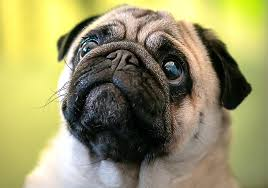
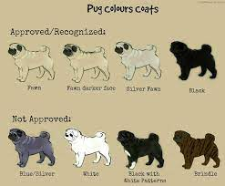
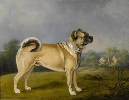

pagina 1
Los perros pug o carlino se caracterizan por su cuerpo corto y compacto, que les da un aspecto regordete y cuadrado. A pesar de ser perros de tamaño pequeño, son bastante musculosos, por lo que pesan entre 6 y 8 kilogramos. Entre las características de los perros pug destaca su hocico, muy corto y achatado.
Negro. Es quizás el color más raro entre los perros de esta raza. Se desconoce el origen pero son muy comunes en países europeos como Inglaterra o Francia. Algunos cachorros nacen con las patas blancas pero con el tiempo ese color se oscurece o desaparece. Blanco. El color blanco es uno de los más comunes y en la mayoría de los casos denota la falta de pureza en la raza. Las características principales son el color claro en sus orejas y los detalles de la cara son casi invisibles. Albino. Es muy parecido al color blanco, pero en este caso, las orejas y ojos carecen de pigmentación. Leonado. Un pelo dorado o beige con orejas negras aunado a línea oscura que atraviesa el lomo del animal, son las principales características de este tono. Es el color más común entre los cachorros o adultos de esta especie.
Los pugs tenían patas largas, narices también larguitas, colas rectas y una constitución delgada. De todos los cambios que han sufrido la forma y tamaño de sus hocicos es uno de los que más afecta su calidad de vida.